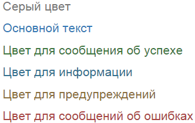
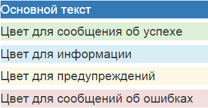

Стили
Boostrap содержит множество готовых стилей для оформления элементов. Применять их достаточно просто, всего то надо добавить к элементу определённый в стилях класс. Это сокращает время на разработку проекта, поскольку не приходится задумываться о дизайне отдельных элементов. Стиль некоторых элементов, вроде заголовков <h1> также отличается от исходного, это надо учитывать.
Цвет и фон
Для веб-страницы устанавливается белый цвет фона, набор шрифтов Helvetica Neue, Helvetica, Arial и цвет текста #333. Вы также можете использовать заданный набор цветов для привлечения внимания к тексту и создания информационных сообщений (пример 1).
Пример 1. Цвета текста
<p class="text-muted">Серый цвет</p>
<p class="text-primary">Основной текст</p>
<p class="text-success">Цвет для сообщения об успехе</p>
<p class="text-info">Цвет для информации</p>
<p class="text-warning">Цвет для предупреждений</p>
<p class="text-danger">Цвет для сообщений об ошибках</p>Результат применения этих классов показан на рис. 1.

Рис. 1. Цвета для разных сообщений
Подобным же образом можно менять цвет фона у текста или другого элемента, например, кнопок. Немного поменяются имена классов, но принцип сохранится (пример 2).
Пример 2. Фон элементов
<p class="bg-primary">Основной текст</p>
<p class="bg-success">Цвет для сообщения об успехе</p>
<p class="bg-info">Цвет для информации</p>
<p class="bg-warning">Цвет для предупреждений</p>
<p class="bg-danger">Цвет для сообщений об ошибках</p>Результат применения этих классов показан на рис. 2.

Рис. 2. Фон для разных сообщений
Врезки
Для создания врезок предназначены классы pull-left и pull-right, которые выравнивают элемент, соответственно, по левому и правому краям. Врезкой называется блок с рисунками и текстом, который встраивается в основной текст. Врезка обычно располагается по левому или правому краю текстового блока, а основной текст обтекает её с других сторон (пример 3).
Пример 3. Создание врезки
<h1>Борщ</h1>
<div class="pull-right bg-info" style="width: 20em; padding: 10px;">
<h2><small>Хозяйке на заметку</small></h2>
<p>Борщ получится вкуснее, если добавить в него немного соли.</p>
</div>
<p>Мясо отварить до готовности. Промыть свеклу, очистить,
нарезать соломкой и тушить с помидорами до полуготовности.</p>
<p>Бульон процедить, мясо нарезать кусочками. В бульон добавить
нарезанный дольками картофель, довести до кипения, опустить нарезанную
соломкой свежую капусту и варить 10-15 минут, добавить пассерованные
овощи, болгарский перец, нашинкованный тонкой соломкой,
специи и довести до готовности.</p>
<p>Готовому борщу дать настояться в течение 20-25 минут.
При подаче к столу добавить сметану, мясо, зелень.</p>Результат данного примера показан на рис. 3.

Рис. 3. Вид врезки в тексте
Чтобы наша врезка была более заметна, к <div> добавлен класс bg-info, а также ограничена его ширина. Само обтекание в стилях делается с помощью свойства float, которое продолжает воздействовать и на нижние элементы. Для отмены действия float применяется класс clearfix, он добавляется к любому нижележащему элементу.
См. также
Документация по использованию классов в Bootstrap